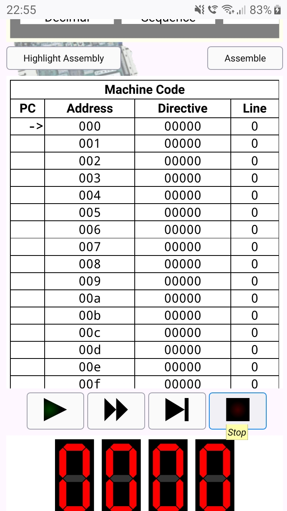
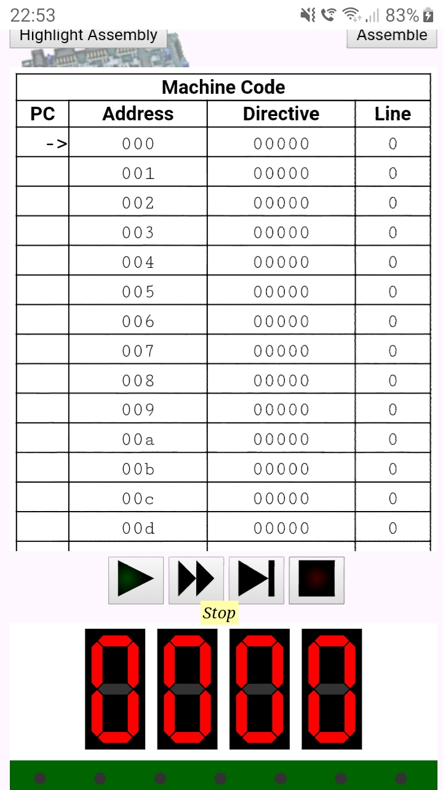
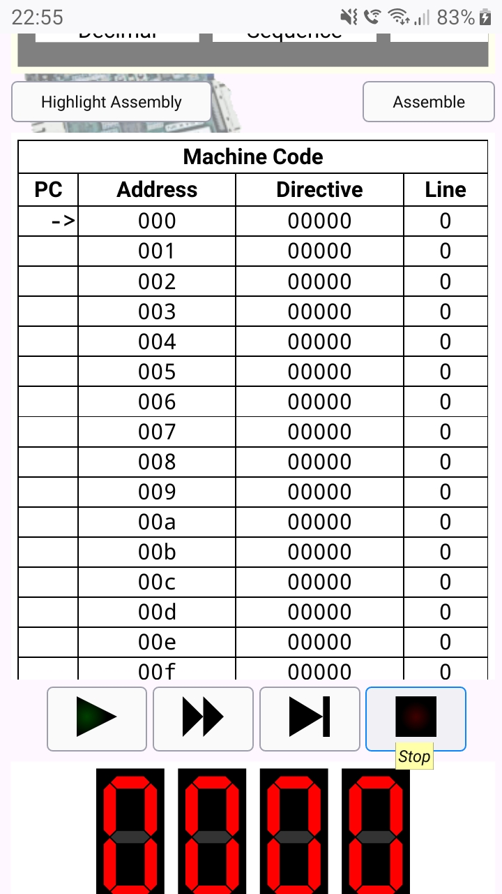
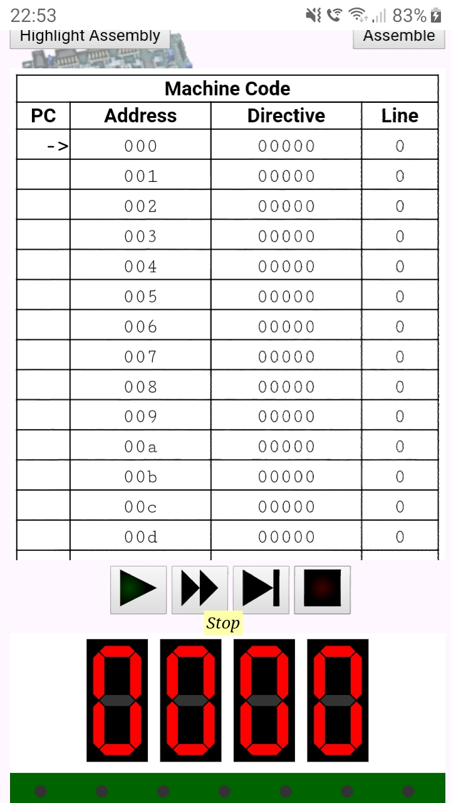

CSS tricks I've found
So, I've been a webmaster ever since 2017. Here are some problems with
CSS I've run into and how I solved them:
Here was the relevant CSS:

However, in Chrome, it looked like this:

In Chrome, tooltips were moved to the left of the button.
Here is an ingenious solution given by the StackOverflow user called dippas: Simply add position: relative; to the buttons in simulationButtons, like this:
There is an even better solution. At the university, we are taught that we should add title attributes to <abbr> tags so that tooltips are shown when one hovers over the <abbr> with a mouse. But did you know title is supported on basically all HTML tags, rather than just <abbr>? So, yeah, you can use the title attribute to show tooltips.
Tooltips work in Firefox but not in Chrome
So, while making my PicoBlaze assembler and emulator, I've run into the following problem. I implemented some tooltips on buttons with images. In Firefox, they worked as expected, that is, they appeared right below the button when you hover over that button. However, in Chrome, they appeared far left of the button.Here was the relevant CSS:
.tooltip {
display: none;
}
button:hover .tooltip {
display: block;
position: absolute;
background: #ffffaa;
z-index: 10;
padding: 2px;
font-style: italic;
font-family: Times;
}
And here is the relevant HTML:
<div id="simulationButtons">
<button id="playPauseButton">
<img
src="play.svg"
alt="play"
id="playImage"
style="display: inline"
/>
<img
src="pause.svg"
alt="pause"
id="pauseImage"
style="display: none"
/>
<span class="tooltip">Play/Pause</span>
<!--Didn't know modern browsers don't display alts automatically
when you hover over an image.-->
</button>
In Firefox, it looked like this:
However, in Chrome, it looked like this:

In Chrome, tooltips were moved to the left of the button.
Here is an ingenious solution given by the StackOverflow user called dippas: Simply add position: relative; to the buttons in simulationButtons, like this:
#simulationButtons button { position: relative; }I have no idea how it works, but it looks like it does work.
There is an even better solution. At the university, we are taught that we should add title attributes to <abbr> tags so that tooltips are shown when one hovers over the <abbr> with a mouse. But did you know title is supported on basically all HTML tags, rather than just <abbr>? So, yeah, you can use the title attribute to show tooltips.
Firefox 52 ignores margin-right on the right-most element in flexbox
Firefox 52.9 ESR is the last version of Firefox to work on Windows XP. And, when I was studying at the university, many computers at my university ran Windows XP and used Firefox 52.9 ESR as the browser. Firefox 52.9 ESR is a relatively good browser, much better than Internet Explorer 11, however, its implementation of the CSS flexbox is buggy. Namely, it ignores margin-right on the right-most element in the flexbox. Here is a solution I've found while programming my PicoBlaze assembler and emulator (where the list of examples is a flexbox):.exampleCodeLink:last-child::after { /* Firefox 52, apparently, ignores margin-right on the last element of the flexbox. So, let's solve it somewhow differently. */ content: " "; display: block; width: 1px; flex-shrink: 0; white-space: pre; }Basically, add a few spaces as ::after pseudo-element of the last element in the flexbox (selected by the :last-child pseudo-class) and style them as white-space: pre. Should be self-explanatory how it works. Unfortunately, you cannot control exactly how big the margin would be (you cannot get more precise than the width of the space in the monospace font the browser is using), but I cannot think of a better solution.
A layout using HTML5 tags is not displayed properly in Internet Explorer 11
In my experience, this is usually caused by Internet Explorer 11 not supporting the <main> tag. Fortunately, Internet Explorer 11 (unlike early versions of Internet Explorer) supports CSS styling of unknown elements, so you can simply add this to your CSS:main { display: block; }Unknown elements are by default inline, but <main> should, of course, be a block element.
SVG elements are not displaying properly in Internet Explorer 11
In my experience, what often works is adding this to your CSS:svg { overflow: hidden; }When you think about that, what Internet Explorer 11 is doing in that case (some SVG element goes out of bounds of the image) actually makes more sense than what the standard-conforming browsers are doing, right? I mean, for most HTML elements, one doesn't hide overflowing content by default, so why would it make sense to do that for SVG elements? But, just like with the CSS Box Model (Internet Explorer 6, for example, used a different box model than one specified by the standards, causing the elements with padding and border to appear shrinked compared to what they appear to other browsers), it's better to obey the standards than to obey common sense.